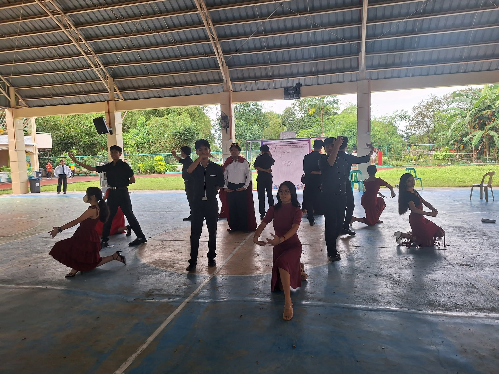
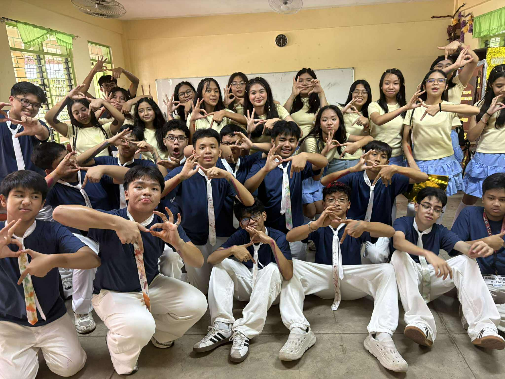
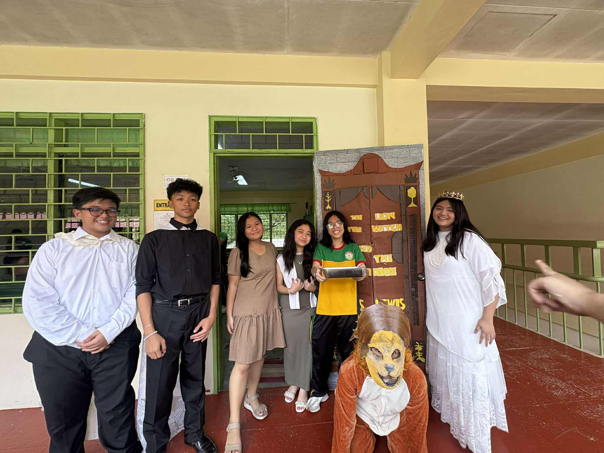

Reflection:I was the king in the MAPEH dance, meaning I was the only one dancing without a partner whilst the rest of my classmates were dancing with their partners. I learnt to dance in the center, which is tough for me considering I am always at the corner back of dance PTs. I felt so scared and I kept messing up every move, but at least I was able to do it.

Reflection:
Every section was in it to win. It was obvious that the star section of grade 9 would win, they always do. But we all try anyway. Even when our section lost, they are still the winners in my heart. Every practice we gave it our all, our 100%. And even if that is not enough, we can learn from it and give it our 110% next year.

Reflection:
I have not learned, but rather, re-learnt the lesson of cooperation and teamwork. We all had a role to play, and when we finished early, we help those who are still doing their task. I also learned about the dessert known as turkish delight which is so yummy yum yum.